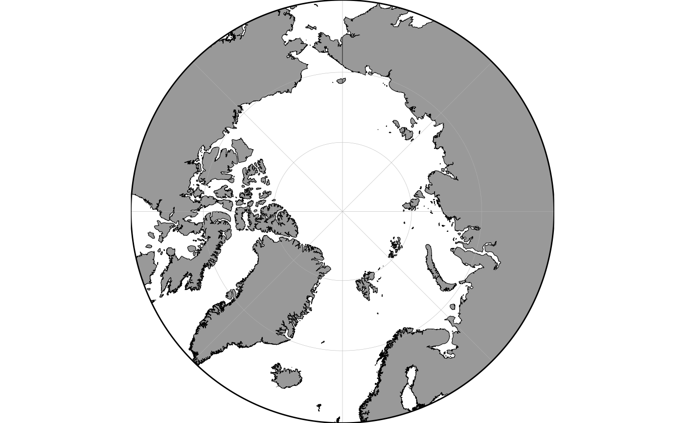
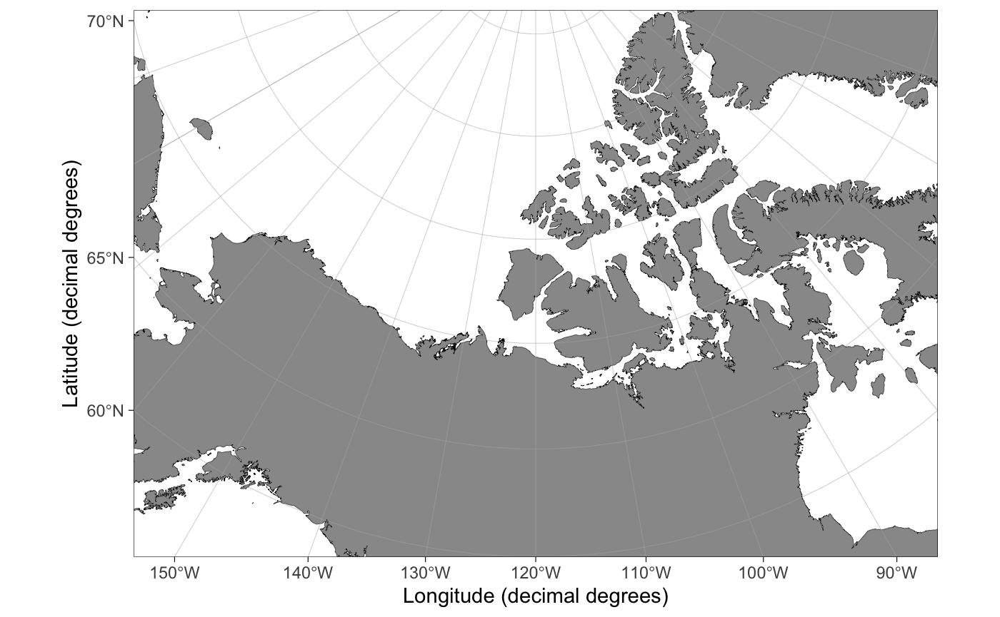
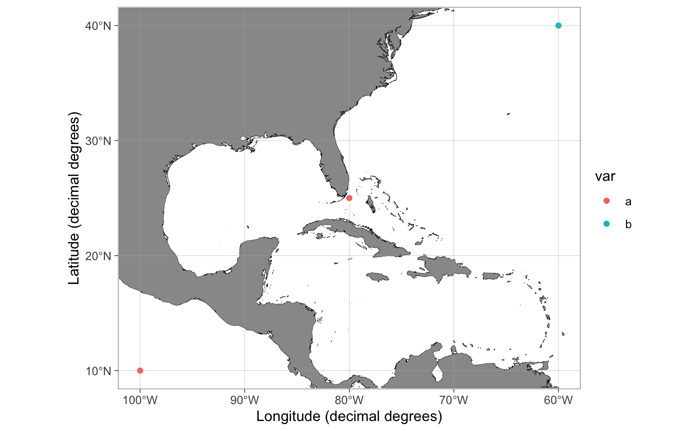
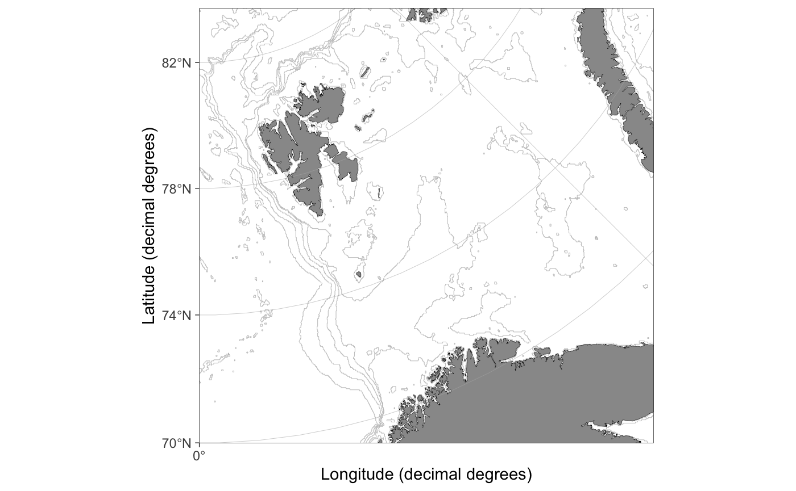
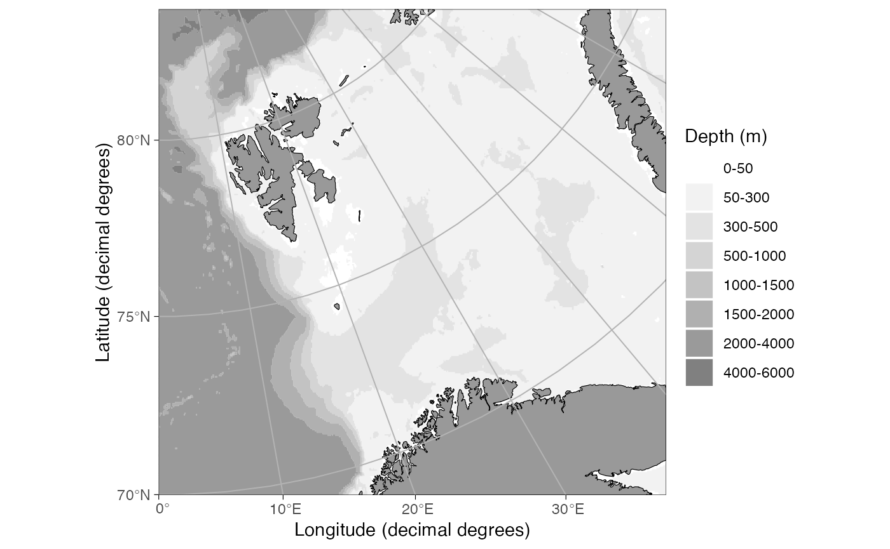
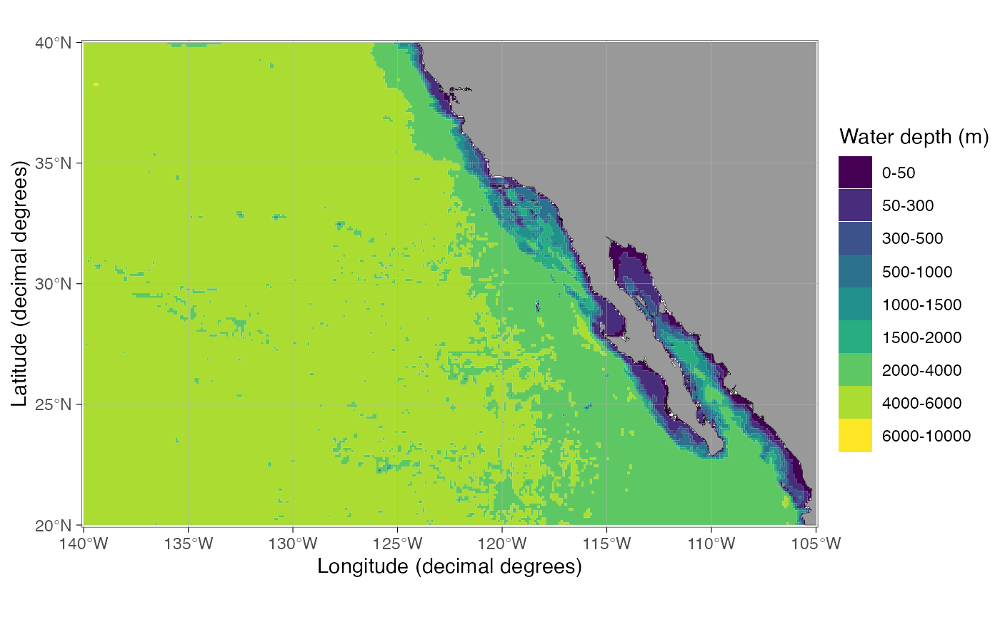
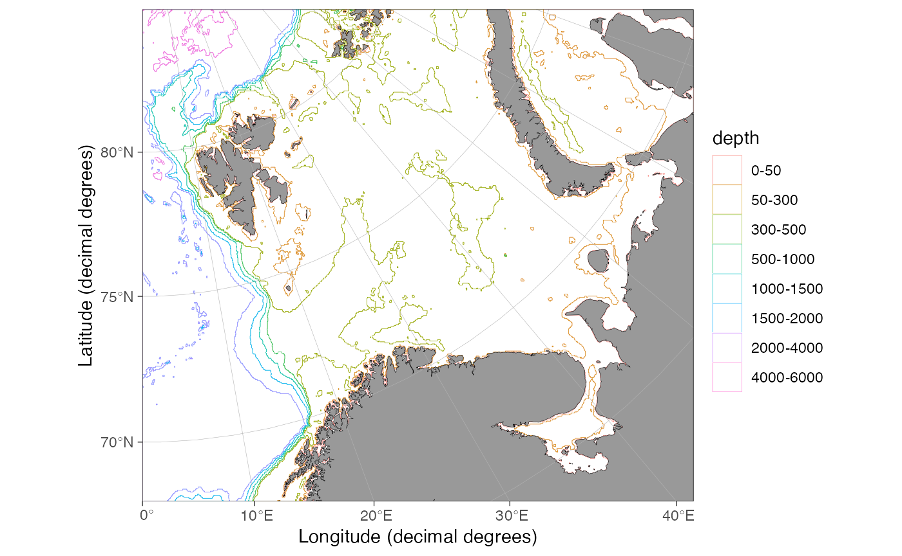
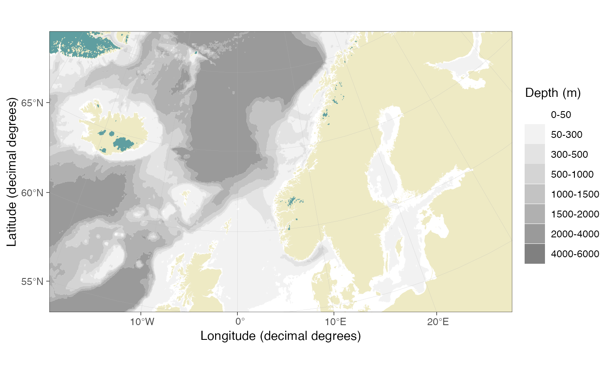

ggOceanMaps User Manual
Mikko Vihtakari (Institute of Marine Research)
05 June, 2020
Source:vignettes/ggOceanMaps.Rmd
ggOceanMaps.Rmdlibrary(ggOceanMaps)
The ggOceanMaps package for R allows plotting data on bathymetric maps using ggplot2. The package is designed for ocean sciences and greatly simplifies bathymetric map plotting anywhere around the globe. ggOceanMaps uses openly available geographic data. Citing the particular data sources is advised by the CC-BY licenses whenever maps from the package are published (see the Citations and data sources section). Due to the package size limitations, ggOceanMaps depends on the ggOceanMapsData package which stores the shapefiles. Note that the package comes with absolutely no warranty and that maps generated by the package are meant for plotting scientific data only. The maps are coarse generalizations of third party data and therefore inaccurate.
Basic use
ggOceanMaps extends on ggplot2. Data that contain geographic information can be plotted on the maps generated by ggOceanMaps using the ggplot2 layers separated by the + operator. The package uses spatial shapefiles, GIS packages for R to manipulate, and the ggspatial package to help to plot these shapefiles. The shapefile plotting is conducted internally in the basemap function and uses ggplot’s sf object plotting capabilities.
The primary aim of ggOceanMaps is to make plotting oceanographic spatial data as simple as feasible, but also flexible for custom modifications. The “as simple as feasible” part will be covered in this section, while the “flexible for custom modifications” part is covered in the Advanced use section. The basic use section of this tutorial assumes that the user knows how to use ggplot. If you are not familiar with this package, you may read the Data visualization section in Hadley Wickham & Garrett Grolemund. This tutorial does not describe functions in ggOceanMaps but rather focusses on how to use them. Make sure to refer to the function documentation while reading the tutorial.
Limits
To ensure simplicity, ggOceanMaps package attempts to use decimal degree coordinate system as much as possible. This system represents coordinates on a sphere, while maps are plotted in two dimensions. Therefore, the underlying map data have to be projected using different mathematical algorithms depending on the geographic location. The simplest way of defining the geographic location is to use the limits argument with decimal degrees. The limits argument can be defined either as a numeric vector of length 1 or 4. Specifying the argument as a single integer between 30 and 88 or -88 and -30 plots a polar stereographic map for the Arctic or Antarctic, respectively.

Rectangular maps are plotted by specifying the limits argument as a numeric vector of length 4 where the first element defines the start longitude, the second element the end longitude, the third element the minimum latitude and the fourth element the maximum latitude of the bounding box:

Limiting maps using decimal degrees is somewhat counter-intuitive because maps plotted for polar regions (>= 60 or <= -60 latitude) are actually projected to Arctic and Antarctic polar stereographic systems. Because decimal degrees are angular units running counter-clockwise, also the longitude limits have to be defined counter-clockwise. Projected maps with decimal degree limits will lead to expanded limits towards the poles when using Arctic and Atlantic Polar Stereographic projections because decimal degrees represent a sphere:

The figure above: Limiting rectangular basemaps is done by placing four coordinates to the limit argument. A) If the limits are in decimal degrees, the longitude limits ([1:2]) specify the start and end segments of corresponding angular lines that should reside inside the map area. The longitude limits are defined counter-clockwise. The latitude limits [3:4] define the parallels that should reside inside the limited region given the longitude segments. Note that the resulting limited region (polygon with thick red borders) becomes wider than the polygon defined by the coordinates (thin red borders). The example limits are c(120, -120, 60, 80). B) If the limits are given as projected coordinates or as decimal degrees for maps with |latitude| < 60, limits elements represent lines encompassing the map area in cartesian space. The example limits are the limits from A) projected to the Arctic stereographic (crs = 3995). When limiting basemaps using data, the limits are calculated for the maximum reach of projected coordinates as in B but with an added buffer to place all points inside the map area.
As an example:
dt <- data.frame(lon = c(160, 160, -160, -160), lat = c(60, 80, 80, 60)) basemap(limits = c(160, -160, 60, 80)) + geom_spatial_polygon(data = dt, aes(x = lon, y = lat), fill = NA, color = "red")

Exact control of map limits can be difficult using decimal degree limits in polar regions. The limits argument also allows specifying the limits in the underlying projected coordinate units. First, we will need to find out how these units look like:
basemap(limits = 60, projection.grid = TRUE, grid.col = "red")

The projection.grid argument plots a grid using the projected actual map coordinates instead of decimal degrees. The grid helps in defining the limits using projected coordinates giving better control over the map limits than decimal degree coordinates. The automatic shapefile definition algorithm does not work for projected coordinates. Therefore, if the limits are not given as decimal degrees (any longitude outside the range [-180, 180] or latitude [-90, 90]), the function asks to specify shapefiles. The shapefiles can be defined by partially matching the names of the pre-made shapefiles in shapefile_list (e.g. “Ar” would be enough for “ArcticStereographic”):

Data limits
The limits of a map can also be defined by inputting a data frame to the data argument. The limits are automatically defined allowing the user to quickly find limits for a desired spatial dataset:
dt <- expand.grid(lon = c(160, -160), lat = c(60, 80)) basemap(data = dt) + geom_spatial_point(data = dt, aes(x = lon, y = lat), color = "red")

Note how the function expands the map to make all data fit inside the map area compared to a similar plot using the limits argument above. The function automatically detects columns containing longitude and latitude information. The automatic detection algorithm is not very advanced and it is recommended to use intuitive column names for longitude (such as “lon”, “long”, or “longitude”) and latitude (“lat”, “latitude”) columns. The coordinate data have to be given as decimal degrees for the data argument to function.
Bathymetry and glaciers
It is advised to limit your map first and only then plot bathymetry and glaciers to save the processing time of your computer (the bathymetry shapes can be large). Bathymetry is plotted simply by specifying bathymetry = TRUE:

Glaciers can be plotted using the glaciers argument:
basemap(limits = 60, glaciers = TRUE, bathymetry = TRUE)

Adding data to maps
The basemap(...) function works almost similarly to the ggplot(...) function as a base for adding further layers to the plot. The difference between the basemap() and the ggplot() is that the basemap() plot already contains multiple ggplot layers. All layers except bathymetry have no other aes mapping than x, y and group. Bathymetry is mapped to fill or color color in addition. This means that when you add ggplot layers, you need to specify the data argument explicitly as shown below. Another difference is that basemaps are plotted using projected coordinates. The ggspatial and ggplot’s geom_sf functions convert the coordinates automatically to the projected coordinates:
dt <- data.frame(lon = c(seq(-180, 0, 30), seq(30, 180, 30)), lat = -70) basemap(limits = -60, glaciers = TRUE) + geom_spatial_point(data = dt, aes(x = lon, y = lat), color = "red")

The ggplot functions can also be used, but the coordinates need to be transformed to the basemap projection first using the transform_coord function:
basemap(limits = -60, glaciers = TRUE) + geom_point(data = transform_coord(dt), aes(x = lon, y = lat), color = "red")

Note that the maps plotted in temperate and tropical regions are not projected. Consequently, decimal degrees work for such maps directly:
dt <- data.frame(lon = c(-100, -80, -60), lat = c(10, 25, 40), var = c("a", "a", "b")) basemap(data = dt) + geom_point(data = dt, aes(x = lon, y = lat), color = "red")

The transform_coord function detects the projection automatically, given that the map is limited using a similar range of coordinates. Therefore you can use the transform_coord as demonstrated above whenever using standard ggplot layers.
transform_coord(data.frame(lon = -80, lat = 25), bind = TRUE) #> lon lat lon.proj lat.proj #> 1 -80 25 -80 25
Rotating maps
The stereographic maps can be rotated to point towards north using the rotate argument:

A word of warning, however: the rotation involves reprojecting all shapefiles in their entirety and is memory consuming especially for large bathymetry shapes. Make sure to limit your map correctly before you add bathymetry. The rotation is still experimental and does not work for limits defined using projected coordinates or data. This functionality is likely to contain a whole lot of bugs. Rotation does not currently work within the transform_coord() function. Use the ggspatial::geom_spatial_* functions when adding data to rotated maps.
Quick map
The qmap function is designed as a shortcut to quickly take a look at a spatial dataset similar to the ggplot’s qplot function. This function is supposed to automatically detect the type of data fed into the function and plot a map using appropriate geometries, limits, and projection. The function has not been developed properly yet and requires user feedback and testing.

qmap(dt, color = var) # map color

Advanced use
This section focuses on flexibility and user modifications. It is assumed that advanced users understand the basics of geographic information systems (GIS) and how to use these systems in R (e.g. see the Making Maps with R chapter in Lovelace et al. 2020).
Projections
The basemap function uses the limits argument to automatically detect the required projection for a map (or the data argument to calculate limits). The algorithms deciding which projection to use are defined in define_shapefiles and shapefile_list functions. These conditions are expected to change during the development of the package and documented information here or in the basemap function might be outdated. Make sure to check the projection definition functions for up-to-date information. At the time of writing, the function uses three different projections (given as EPSG codes):
-
3995 WGS 84 / Arctic Polar Stereographic. Called “ArcticStereographic”. For max latitude (
limits[4]) >= 60 (if min latitude (limits[3]) >= 30), and single integer latitudes >= 30 and <= 89. -
3031 WGS 84 / Antarctic Polar Stereographic. Called “AntarcticStereographic”. For max latitude (
limits[4]) <= -60 (if min latitude (limits[3]) <= -30), and single integer latitudes <= -30 and >= -89. -
4326 WGS 84 / World Geodetic System 1984, used in GPS. Called “DecimalDegree”. For min latitude (
limits[3]) < 30 or > -30, max latitude (limits[4]) < 60 or > -60, and single integer latitudes < 30 and > -30.
The basemap function uses pre-transformed shapefiles for each of the projections above (defined in shapefile_list). This is to make the plotting quicker and more memory efficient but leads to larger data size required by the package.
Appearance
Bathymetry styles
The basemap function contains four pre-made bathymetry styles defined using the bathy.style argument. Two of these alternatives ("poly_*") have been mapped to fill using the geom_polygon function, while the two others (contour_*) have been mapped to color. The default style ("poly_blues") has been displayed throughout this user manual. The other styles are:



Customizing bathymetry styles
The bathy.style = "poly_*" bathymetry polygons are mapped to geom_fill_discrete and can be modifying using standard ggplot syntax:
basemap(limits = c(-140, -105, 20, 40), bathymetry = TRUE) + scale_fill_viridis_d("Water depth (m)")

The bathy.style = "contour_*" bathymetry lines are mapped to geom_color_discrete and can be modifying using standard ggplot syntax:
basemap(limits = c(0, 60, 68, 80), bathymetry = TRUE, bathy.style = "contour_blues") + scale_color_hue()

Graphical parameters
The basemap function uses graphical parameters that (very objectively) happen to please the eye of the author and have worked in the applications needed by the author. The default parameters may suddenly change without warning. You may want to modify the appearances of a basemap to your own liking. This can be done using the *.col (fill), *.border.col (line color) and *.size (line width) arguments:
basemap(limits = c(-20, 30, 55, 70), glaciers = TRUE, bathymetry = TRUE, bathy.style = "poly_greys", land.col = "#eeeac4", gla.col = "cadetblue", land.border.col = NA, gla.border.col = NA, grid.size = 0.05)

Grid lines can be removed by setting the grid.col to NA. Axis labels can be manipulated using standard ggplot code:
basemap(limits = c(124, 148, 31, 50), grid.col = NA) + labs(x = NULL, y = "Only latitude for you, ...")

Add scale bar and north arrow
Scale bar and north arrows can be added using the ggspatial functions (the package is automatically loaded when you use ggOceanMaps):
basemap(limits = c(-75, -45, 62, 78), rotate = TRUE) + annotation_scale(location = "br") + annotation_north_arrow(location = "tr", which_north = "true")

Note that the north arrow in the example above points towards North where it is placed and that the direction of North varies as shown by the meridians. The scale bar is correct at 71 \(\circ\)N latitude as specified by the projection (crs = 3995) for Arctic stereographic maps.
Modifying basemap objects
The objects produced by the basemap function are standard ggplot objects with the difference that relevant information used in mapping is added to attributes of the object:
p <- basemap(-60) attributes(p) #> $names #> [1] "data" "layers" "scales" "mapping" "theme" #> [6] "coordinates" "facet" "plot_env" "labels" #> #> $class #> [1] "gg" "ggplot" "ggOceanMaps" #> #> $bathymetry #> [1] FALSE #> #> $glaciers #> [1] FALSE #> #> $limits #> [1] -3333134 3333134 -3333134 3333134 #> #> $polarmap #> [1] TRUE #> #> $crs #> [1] 3031 #> #> $proj #> [1] "+proj=stere +lat_0=-90 +lat_ts=-71 +lon_0=0 +k=1 +x_0=0 +y_0=0 +datum=WGS84 +units=m +no_defs +ellps=WGS84 +towgs84=0,0,0"
Accessing the attributes allow custom modifications of maps produced by the basemap function. See the Reordering layers section as an example.
Reordering layers
Sometimes there is a need to move land, glacier, and grid layers on top of spatial data added on a basemap. This can be done using the reorder_layers function. This example uses Norwegian fishing regions (Hovedområder f.o.m. 2018), which can be downloaded from the Norwegian Directorate of Fisheries data portal (use “ESRI shapefile” option). The example works for any spatial polygons with crs information, however.
The Norwegian fishing regions are included as an example dataset in the ggOceanMaps package. You can download these data and use the rgdal::readOGR function to read the shapefile if you wish to follow the example fully.
data(fishingAreasNor) basemap(limits = raster::extent(fishingAreasNor)[1:4]) + annotation_spatial(fishingAreasNor, fill = NA) + coord_sf(expand = FALSE)

The initial plot draws the polygons. Note how we had to add coord_sf(expand = FALSE) because layer_spatial and annotation_spatial functions from the ggspatial package seem to modify coord_sf when added to the plot. The basemap function uses expand = FALSE (run the script without the addition and see the difference). Note also how the polygon boundaries are partly on land. We want to eventually hide them under land. We also add region labels and color the polygons based on their area to demonstrate the capabilities of ggplot, ggspatial and ggOceanMaps:
labels <- sp::SpatialPointsDataFrame(rgeos::gCentroid(fishingAreasNor, byid=TRUE), data = fishingAreasNor@data) labels <- df_spatial(labels) # To correct for a bug in ggspatial 1.1.1 if("x_without_geom[df_geom$feature_id, ]" %in% names(labels)) { names(labels)[names(labels) == "x_without_geom[df_geom$feature_id, ]"] <- "FID" } # Bug correction end. fishingAreasNor@data$area <- raster::area(fishingAreasNor)/1e9 # calculate area in 1000 km2 p <- basemap(limits = raster::extent(fishingAreasNor)[1:4]) + annotation_spatial(fishingAreasNor, aes(fill = area)) + geom_spatial_text(data = labels, aes(x = x, y = y, label = FID), size = FS(8), fontface = 2) + scale_fill_distiller(name = "Area\n(1000 km2)", palette = "Spectral", na.value = "white", limits = c(0, 500), oob = scales::squish) reorder_layers(p)

Ideally, the region labels should not go under land. This can be fixed by plotting the labels on top of the reordered ggplot object. To demonstrate how to reorder layers, we do this manually here:
p <- reorder_layers(p) tmp <- sapply(p$layers, function(k) !is.null(k$mapping$label)) # the layer with label mapping p$layers <- c(p$layers[-which(tmp)], p$layers[which(tmp)]) p

Custom shapefiles
The ggOceanMaps package uses vector (spatial polygon) data to make the plotting more efficient and to produce sharp images at any resolution. For the time being, the package supports three kinds of shapefiles: 1) land shapes, 2) glacier shapes, and 3) bathymetry shapes. Each of these shapes has to be defined using the same projection. Since the shapefiles are large and generating them may require long processing time, it is most convenient to save them in a Rdata file as sp::SpatialPolygonsDataFrames objects and load them to the memory when used to make a map. Useful sources for spatial data are:
Vector data
- Natural Earth Data provides polygon data in relatively high detail for the entire Earth. Used as data-source for land and glacier shapes throughout the package, except for the most detailed maps.
- Norwegian Mapping Authority provides high-resolution spatial data for mainland Norway and Svalbard.
- Norwegian Polar Institute provides high-resolution vector data for Norwegian polar regions.
Raster data for bathymetry
- GEBCO Compilation Group (2019) GEBCO 2019 15-arcsecond grid. The highest resolution open bathymetry grid available at the moment. Referred to as “GEBCO data”.
-
ETOPO1 1 Arc-Minute Global Relief Model. Can also be accessed using the
marmap::getNOAA.bathy(see Section 1). Referred to as “NOAA data” and “ETOPO1 data”.
There are probably more sources which the author has not needed yet. Please send an email to add more options to the list. The bathymetry datasets are large and require vectorization before they can be plotted in ggplot2 within a reasonable time.
Here we go through how to plot customized shapefiles for the Barents Sea as an example. A similar procedure can be applied to any region in the world.
Bathymetries
The Natural Earth Data provides bathymetry vector data, which can be readily used in ggOceanMaps. The contours in that dataset are, however, not very practical for marine biology and fisheries in shallow seas such as the Barents Sea. Download the ETOPO1 dataset as grid registered NetCDF gmt4 to a folder in your computer. It may be beneficial to make a “GIS” or “Shapefiles” folder where you store similar datasets for later use. Whether you use ice or bed-rock surface does not matter for this example as there are no glaciers under the sea-level within the region of interest. In any case, this choice has no visual effect because land and glaciers will be plotted on top of the bathymetry, but the ice surface option will lead to smaller file size.
The bathymetry needs first to be reclassified and formatted for the consequent vectorization step. First, we need to define the location of the ETOPO1 dataset and to find limits for our region in decimal degrees. The limits can be found using the basemap function. It is advised to use slightly wider limits than the region of interest.
etopoPath <- "" # Replace by the path to the folder where the ETOPO1 grd file is located. lims <- c(-8, 65, 68, 82) projection <- "+init=epsg:32636" basemap(limits = lims)
We also need to define an appropriate projection. We will use the UTM 36N zone projection, which is approximately in the middle of our area of interest. We define higher resolution contour in depths 0-500 m because our area of interest is relatively shallow. The raster_bathymetry function is relatively slow for large data. The aggregation.factor argument can be used to reduce file size but will influence the resolution of the resulting shapefile (higher factors lead to a lower resolution).
rb <- raster_bathymetry(bathy = paste(etopoPath, "ETOPO1_Ice_g_gmt4.grd", sep = "/"), depths = c(50, 100, 200, 300, 500, 1000, 1500, 2000, 4000, 6000, 10000), proj.out = projection, boundary = lims )
Now we have the bathyRaster object which can be vectorized:
The vectorization is done using the vector_bathymetry function. The drop.crumbs and remove.holes parameters can be used to reduce the file size, while the smooth parameter makes the contours look smoother under high zoom levels. Note that the smoothing of raster cell edges is completely arbitrary and may lead to map contours that do not exist in reality.
bs_bathy <- vector_bathymetry(rb) sp::plot(bs_bathy)
Land shapes
Land shapes could theoretically be defined from the bathymetry raster (depth = 0). Nevertheless, since the 10m Natural Earth Data vectors are of high resolution, there has been no need to write a function to do this. We use Natural Earth Data instead. Download the Natural Earth Data Land and Minor Islands vectors to your “GIS” or “Shapefiles” folder and define folder paths under:
NEDPath <- "" # Natural Earth Data location outPath <- "" # Data output location
Once done, we go ahead and process the shapefiles:
world <- rgdal::readOGR(paste(NEDPath, "ne_10m_land/ne_10m_land.shp", sep = "/")) islands <- rgdal::readOGR(paste(NEDPath, "ne_10m_minor_islands/ne_10m_minor_islands.shp", sep = "/")) world <- rbind(world, islands) bs_land <- clip_shapefile(world, lims) bs_land <- sp::spTransform(bs_land, CRSobj = sp::CRS(projection)) rgeos::gIsValid(bs_land) # Has to return TRUE, if not use rgeos::gBuffer bs_land <- rgeos::gBuffer(bs_land, byid = TRUE, width = 0) sp::plot(bs_land)
Glacier shapes
Download the Natural Earth Data Glaciated Areas vectors to your NEDPath.
glaciers <- rgdal::readOGR(paste(NEDPath, "ne_10m_glaciated_areas/ne_10m_glaciated_areas.shp", sep = "/")) rgeos::gIsValid(glaciers) # Needs buffering glaciers <- rgeos::gBuffer(glaciers, byid = TRUE, width = 0) bs_glacier <- clip_shapefile(glaciers, lims) bs_glacier <- sp::spTransform(bs_glacier, CRSobj = sp::CRS(projection)) rgeos::gIsValid(bs_glacier) sp::plot(bs_glacier)
Plotting the shapefiles using basemap
Now that we have the shapefiles, we can save them to a file so that we do not run the script above every time we plot a map using custom shapefiles.
save(bs_bathy, bs_land, bs_glacier, file = paste(outPath, "bs_shapes.rda", sep = "/"), compress = "xz")
The shapefiles can now be plotted using the basemap function:
basemap(shapefiles = list(land = bs_land, glacier = bs_glacier, bathy = bs_bathy), bathymetry = TRUE, glaciers = TRUE)

The list elements land, glacier and bathy are required, but glacier and bathy can be set to NULL if bathymetry and glaciers are set to FALSE, respectively. This means that you are not forced to define bathymetries and glaciers for your custom shapefile maps if plotting them is not desired. Note how the map becomes plotted outside its actual limits. This issue will hopefully be fixed in the future. The map can be limited using the limits or data arguments as any basemap:
basemap(limits = c(10, 53, 70, 80), shapefiles = list(land = bs_land, glacier = bs_glacier, bathy = bs_bathy), bathymetry = TRUE, glaciers = TRUE)

Known issues
Antimeridian (date-line) issues
As any decimal degree projection, the ggOceanMaps suffers from the antimeridian issue for regions < 30 and > -30 latitude. Currently, the basemap function plots the entire world instead of the desired region:
While this problem has yet to be solved, the projected maps \(\geq\) 30 and \(\leq\) -30 can tackle with antimeridians:

Note also that limiting the polar stereographic maps using decimal degree longitude limits[1:2] using equal longitudes in decimal degree space (e.g. c(90, 90), c(-180, 180), …) is equal to limiting a map using latitude argument furthest from the pole. This is because all limit points end up along a single line in angular space. The function automatically corrects for this definition error:

Cannot add a fill scale when using bathymetry
basemap(limits = raster::extent(fishingAreasNor)[1:4], bathymetry = TRUE) + annotation_spatial(fishingAreasNor, aes(fill = area)) #> Error: Continuous value supplied to discrete scale
This issue is because ggplot does not allow two color scales with similar mapping in one plot. The issue can be evaded by using contour bathymetry:
basemap(limits = raster::extent(fishingAreasNor)[1:4], bathymetry = TRUE, bathy.style = "contour_blues", legends = FALSE) + annotation_spatial(fishingAreasNor, aes(fill = area), alpha = 0.4) + coord_sf(expand = FALSE)
If you really need the polygon bathymetries, you can use the ggnewscale package to make the data fill mapping disconnected from that in basemap.
Citations and data sources
The data used by the package are not the property of the Institute of Marine Research nor the author of the package. It is, therefore, important that you cite the data sources used in a map you generate with the package. The spatial data used by this package have been acquired from the following sources:
- Land polygons. Natural Earth Data 1:10m Physical Vectors with the Land and Minor Island datasets combined. Distributed under the CC Public Domain license (terms of use).
- Glacier polygons. Natural Earth Data 1:10m Physical Vectors with the Glaciated Areas and Antarctic Ice Shelves datasets combined. Distributed under the CC Public Domain license (terms of use).
- Bathymetry. Amante, C. and B.W. Eakins, 2009. ETOPO1 1 Arc-Minute Global Relief Model: Procedures, Data Sources and Analysis. NOAA Technical Memorandum NESDIS NGDC-24. National Geophysical Data Center, NOAA. Distributed under the U.S. Government Work license.
Please cite the package whenever maps generated by the package are published. For up-to-date citation information, please use:
citation("ggOceanMaps") #> #> To cite package 'ggOceanMaps' in publications use: #> #> Mikko Vihtakari (2020). ggOceanMaps: Plot Data on Oceanographic Maps #> using 'ggplot2'. https://mikkovihtakari.github.io/ggOceanMaps, #> https://github.com/MikkoVihtakari/ggOceanMaps. #> #> A BibTeX entry for LaTeX users is #> #> @Manual{, #> title = {ggOceanMaps: Plot Data on Oceanographic Maps using 'ggplot2'}, #> author = {Mikko Vihtakari}, #> year = {2020}, #> note = {https://mikkovihtakari.github.io/ggOceanMaps, https://github.com/MikkoVihtakari/ggOceanMaps}, #> }